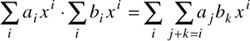

Networking Security Networking Security Networking Security Security Networking Security Networking Security Networking Charlie Kaufman Radia Perlman Mike Speciner Prentice Hall Network Security: Private Communication in a Public World, Second Edition
8.7. Homework
| 1. | A) A finite permutation, π, is a rearrangement of a finite sequence of objects, which we might as well number 1, 2,...n. If we have a permutation, we can look at where 1 goes (π(1)), and then look at where the number at that position goes (π(π(1))), and so forth until we get back to 1. Why do we have to get back to 1?
B) We show this cycle as (1 π(1) π(π(1)) ...). (We don't bother listing 1 twice; the understanding is that the last listed element goes to the first.) We then look for the next object that's not in the cycles we've already listed, say k, and find its cycle (k π(k) π(π(k)) ...), and so forth until we have accounted for all the objects 1, 2,...n. As an optimization, we don't bother listing length-1 cycles; the understanding is that any object that is not listed is not moved. But just so we have a notation for the permutation that doesn't move anything, we write it as (). Some of the permutation of four objects are thus (), (1 2), (1 2) (3 4). List all the permutations of three objects.
C) Composition. As long as two permutations in this cycle notation don't share any elements, it doesn't matter what order we compose them in. But otherwise it does. And unfortunately, there are two ways to do it: left to right and right to left. Religious wars amongst mathematicians have been fought over this, much like big-endian and little-endian in the computer field. The problem is that if π and ρ are two permutations, we might want the permutation specified by π(ρ(k)) to be the composition (π·ρ)(k). But this means we have to apply the cycles right to left, even though within a cycle the notation is clearly left to right. We could just redefine the cycle notation so that each successive object in the list tells from where the object immediately to its left came, and then it would make sense to read the cycles from right to left. Another approach, fairly common amongst algebraists, is to write arguments to the right of the function, as in (k)π. Then ((k)π)ρ would be (k)(π·ρ) with the cycles just concatenated. This is also consistent with multiplication of row vectors by square matrices. Anyway, for purposes of this book, we'll specify that (π·ρ) means first apply ρ and then π. Write out the composition table for the permutations of three objects, and verify that this is a non-commutative group.
| | 2. | Show that in the permutation group of three objects, there are elements of orders 2 and 3, but no element of order lcm(2,3) = 6.
| | | | 3. | Show that the group of permutations of n > 2 objects does not have a generator. But show that any permutation of n objects is the composition of a sequence of instances of the permutations (1 2) and (1 2 ... n).
| | 4. | This is one of my3 favorite problem. It shows the power of associativity. See §8.3 Groups. Consider the following properties:
(LI) | Existence of left identity. There exists an element e such that, for each a, ea = a. | (LN) | Existence of left inverse. For each a, there is an a-1 such that a-1a = e. | (RI) | Existence of right identity. There exists an element e such that, for each a, ae = a. | (RN) | Existence of right inverse. For each a, there is an a-1 such that aa-1 = e. |
Show that if <G,·> has properties A, LI, and LN (or properties A, RI, and RN), it is a group. Nonhint: This would be trivial if you could assume property C. So don't!
Hint: Consider (a-1)-1a-1aa-1.
Find a non-group with properties A, LI, and RN.
| | 5. | Why isn't Zn a field when n isn't prime? Which property fails?
| | 6. | Multiply the polynomials 2x3 + 3x + 1 and 3x2 + 3x + 1.
| | 7. | Show that polynomials satisfy properties A, C, and D. You may first want to notice that

and then use properties A, C, and D of the coefficients' field.
| | 8. | Divide the Z5 polynomial x5 + x3 + 1 by the Z5 polynomial 3x2 + 2x + 1.
| | 9. | In an analogous manner to §7.2 Modular Arithmetic, define polynomial addition and multiplication modulo a non-zero polynomial m(x). Show that each definition makes sense in that it produces the same value (mod m(x)) when you replace either of the operands with an equivalent (mod m(x)) polynomial.
| | 10. | Show that the Z2 polynomial m(x) = x8 + x4 + x3 + x + 1 is irreducible. Hint: If not, it would have a factor of degree 4 or less, so try all 32 possibilities. You can quickly eliminate half of these because x isn't a factor, so neither is any multiple of x.
| | 11. | Compute the inverse of all the nonzero Z2 polynomials mod m(x), where m(x) = x8 + x4 + x3 + x + 1. Represent each polynomial as an octet, with the most significant bit being the coefficient of x7 and the least significant bit being the coefficient of x0.
| | | | 12. | The Rijndael S-box is the composition of two permutations. The first is the inverse just described, but with 0 mapping to itself (since it doesn't have an inverse). This permutation is clearly its own inverse. The second permutation is multiplication by x4 + x3 + x2 + x + 1 mod x8 + 1 followed by addition of x6 + x5 + x + 1. What is its inverse? Verify the S-box and inverse S-box tables (see Figure 3-24 and Figure 3-27).
| | 13. | Verify that the MixColumn polynomial c(x) = 03x3 + 01x2 + 01x + 02 and the InvMixColumn polynomial d(x) = 0Bx3 + 0Dx2 + 09x + 0E are multiplicative inverses mod x4 + 1, with all polynomials over GF(28) as represented in Rijndael. Extra credit: Find the inverse of c(x) by using the Euclidean algorithm.
| | 14. | Verify that the key expansion constants Ci tabulated in Figure 3-31 are just xi-1 mod m(x), using the same representation as in Homework Problem 11.
| | 15. | Verify that the description of Rijndael rounds in §3.5 Advanced Encryption Standard (AES) is equivalent to that in §8.5 Mathematics of Rijndael, and that the decryption described in §3.5.5 Inverse Rounds truly undoes the encryption described in §3.5.4 Rounds.
| | 16. | Show that polynomials over a field form a unique factorization domain (in that every monic polynomial can be expressed uniquely as a product of powers of monic irreducible polynomials) by using the Euclidean algorithm to prove that if a|bc and a is irreducible, then a|b or a|c. Big hint: if not a|b, then gcd(a,b)=1, so xa+yb=1, so c=1c=xac+ybc=a(xc+y(bc/a)).
|
|
|